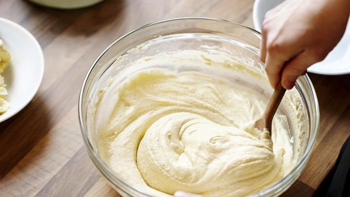
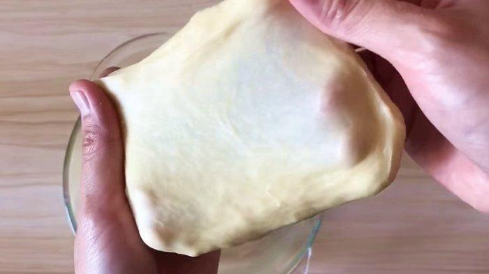

- Campur semua bahan jadi satu
- Uleni sampai kalis (aku pake tangan) jangan takut jika adonan lengket ya, lumuri tangan sesekali dg tepung (tapi jangan menambahkan tepung) uleni terus sampai adonan kalis
- Kalisnya adonan canai tidak sekalis adonan roti ya, kira-kira seperti ini sudah cukup


